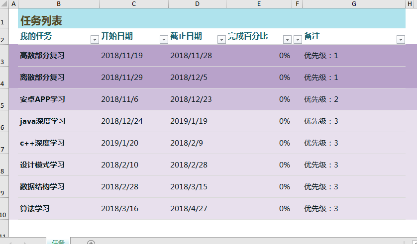

今天没干啥，要写点东西，翻开了从前的笔记，想找点什么可以写的。
看了以后硬是一个也没有写的下去的，以前真是个遥远的名词啊。
那时候写的东西，真奇怪啊。现在想想以前，感觉那时我就像个小丑。还好像小丑，像小丑起码说明我变了，虽然不知道是
进步还是退步。每个人看以前的自己都会忍不住想发笑把，以前的想法我不再认同。以前珍视的，现在我弃之如敝屣。也许
以后我打开自己的博客，翻看现在这篇成长笔记，会摇摇头，感概以前为何会有这种奇怪的想法。
唉，与其感概过去不如计划未来，做个计划表。
计划表:
